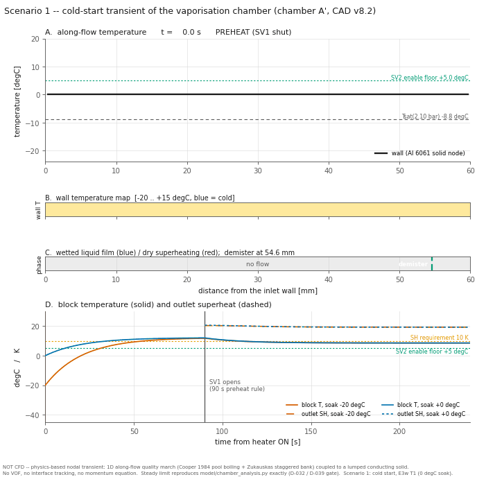
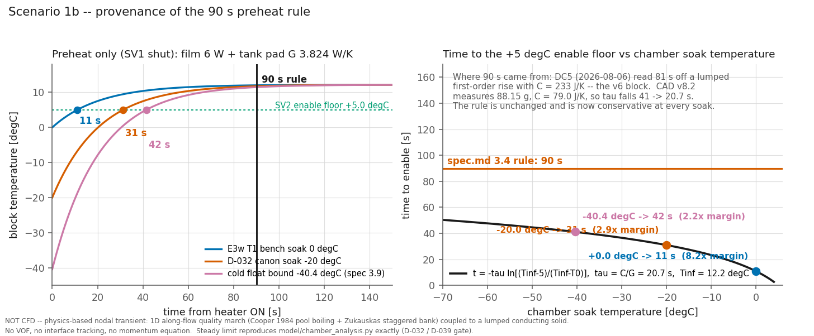
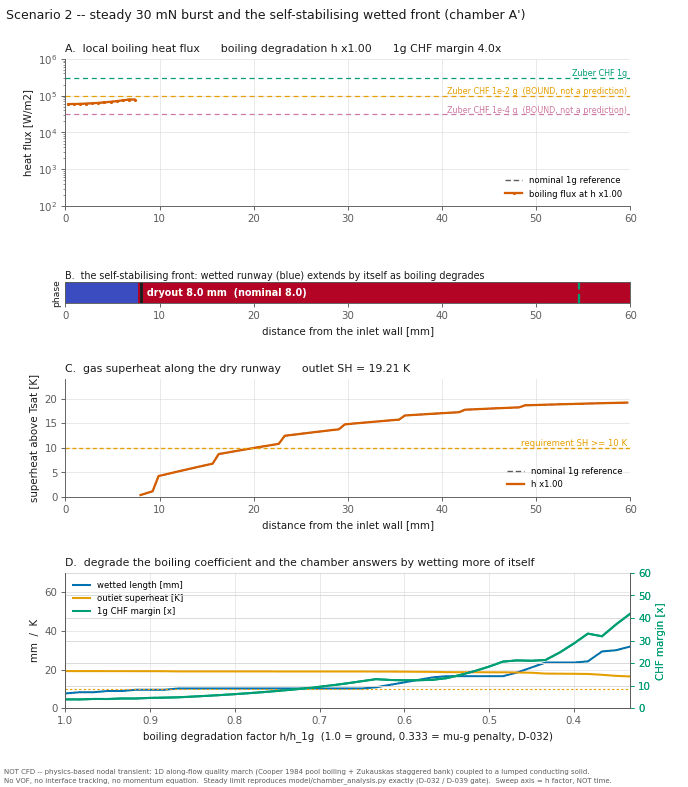
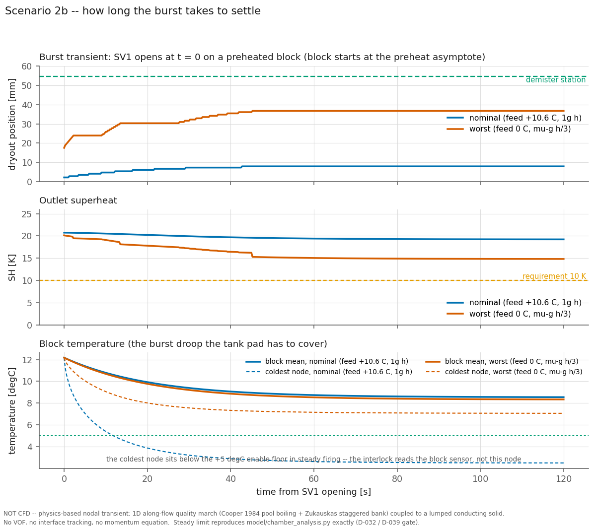
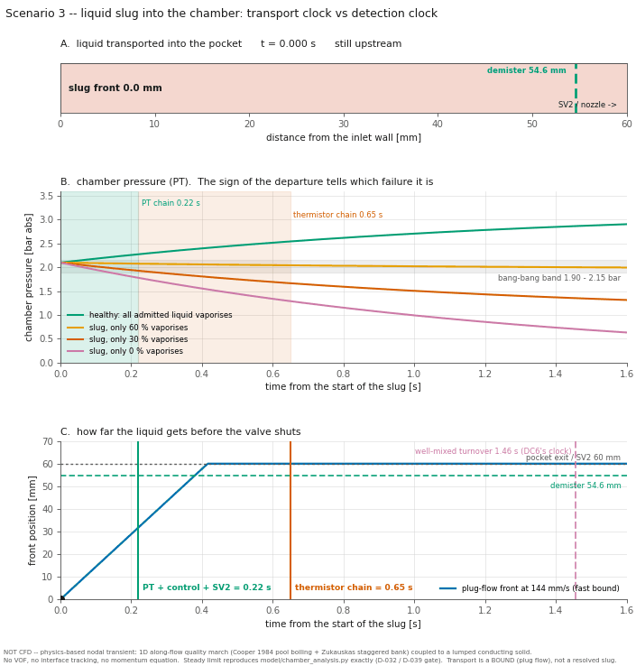
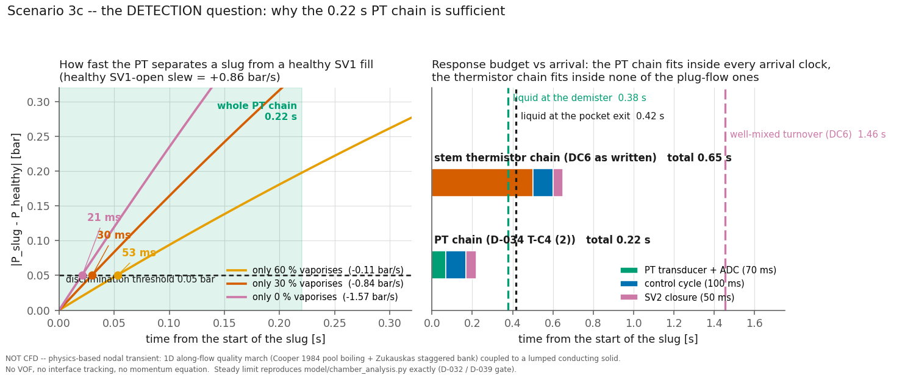
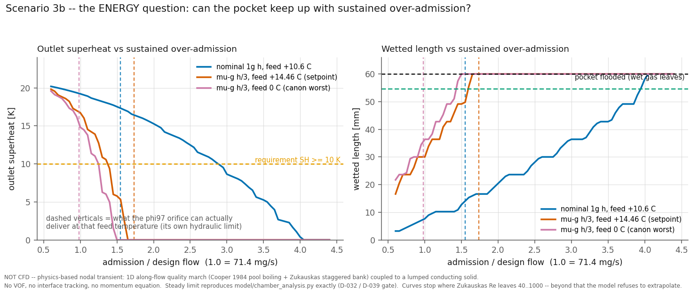
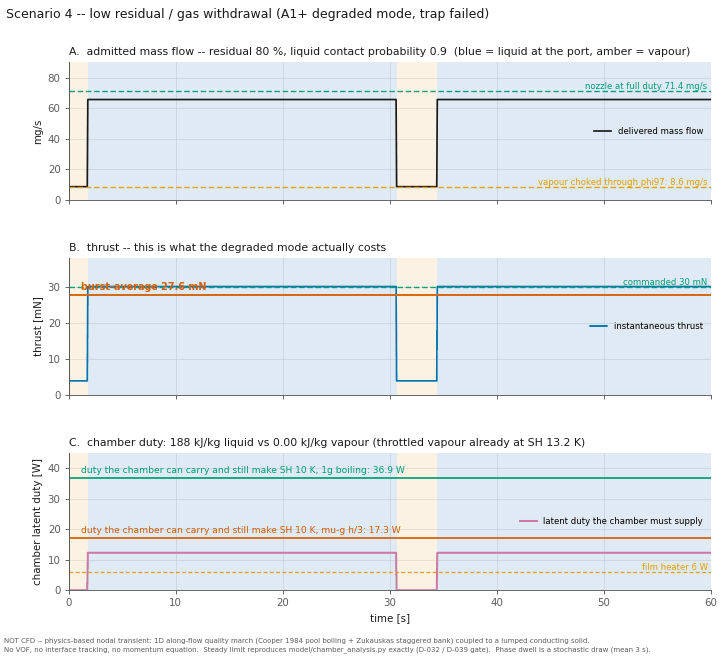
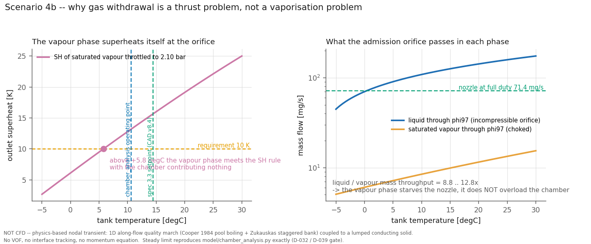

액체 R134a가 기화실 안에서 어디서 끓고 어디서 마르는지, 그리고 그 과정이 콜드스타트·버스트·슬러그·저잔량 같은 실제 운용에서 어떻게 흔들리는지를 계산한 결과입니다.
NOT CFD — 상용 CFD가 아니라 검증 가능한 노달 모델입니다. 1D 유로 행진(94 슬라이스) + 2D 바닥 FDM(1 mm 셀)이고, 쓰인 상관식과 유효범위를 아래에 전부 밝혔습니다.
| 항목 | 상관식 | 출처 | 유효범위 / 본 설계 |
|---|---|---|---|
| 습윤 열전달 | Cooper (1984) 풀비등 | Cooper, Adv. Heat Transfer 16 | 0.001 < p_r < 0.9 / 0.052 |
| 건조 후 열전달 | Žukauskas 지그재그 뱅크 | Žukauskas, Adv. Heat Transfer 8 (1972) | 40 < Re < 1000 / Re ≈ 250 |
| 핀 효율 | η = tanh(mL)/(mL), 단열 팁 | 표준 | — (천장 접촉은 크레딧 안 함) |
| CHF | Zuber (1959) | Zuber, UCLA | 1g만 예측 · μg는 바운드로만 |
| 물성 | CoolProp HEOS R134a | CoolProp 7.2.0 | — |
| # | 항목 | 판정 | 핵심 수치 |
|---|---|---|---|
| 1 | 건조점 · 과열 행진 | PASS | SH 19.21 / 14.81 K ≥ 10 · 자기안정(h/3에서 건조점 4.6배 연장) |
| 2 | 국소 CHF | PASS (1g 4.0×) | 피크 78.6 kW/m² — 인렛 8 mm 집중. μg는 바운드로만 |
| 3 | 바닥 · 핀 2D 전도 | PASS | 최냉 핀 Tsat +13.4 K · 필름 가장자리 낙차 0.09 K |
| 4 | 과열 면적 예산 | PASS | 최악 활주로 23.0 mm (38 %) · SH 마진 48 % |
| 5 | 핀뱅크 압력강하 | PASS | 0.46 Pa vs 허용 25,000 Pa |
| 6 | 출구 기체온 센서 대표성 | 보강필요 | 벽 가중 99.9 % · 최악 바이어스 +4.28 K → 침지형 스템 센서로 변경 |
| 7 | 콜드스타트 90 s 프리히트 | PASS | 최저 +11.76 °C > +5.0 · 마진 +6.76 K |
비등 열전달이 1/3로 나빠지면 어떻게 될까요? 습윤 구간이 스스로 8.0 → 36.7 mm로 늘어나 같은 잠열을 소화합니다. 그래서 최악 조건에서도 출구 과열도가 14.81 K로 요구(10 K)를 넘습니다. 설계가 열전달 계수 추정에 민감하지 않다는 뜻입니다.
정상 상태가 통과해도 실제 운용은 과도입니다. 정본 정상해를 시간축으로 확장해 매 실행마다 정상해와의 정합을 게이트로 검사합니다(Δ 0.0000).
| 소킹 온도 | +5 °C 도달 | 90 s 블록온 | 90 s 규칙 여유 |
|---|---|---|---|
| 0 °C (벤치 T1) | 11.0 s | +12.01 °C | 8.18× |
| −20 °C | 31.3 s | +11.75 °C | 2.88× |
| −40.4 °C (콜드 부유 바운드) | 41.5 s | +11.48 °C | 2.17× |
규칙의 출처가 낡았던 것도 확인됐습니다. 90 s는 v6 블록 열용량(233 J/K) 기준이었고, 현행 CAD 실측은 78.98 J/K라 τ가 41 → 20.65 s로 절반이 됐습니다. 최한랭에서도 41.5 s면 충분합니다.




액체 덩어리가 들어오면 압력 기울기의 부호가 뒤집힙니다 — 정상 +0.86 bar/s vs 슬러그 −0.11~−1.57. 그래서 21~53 ms에 분리됩니다. 반면 서미스터 체인(0.65 s)은 어떤 도달 시계에도 미달이라 1차 센서 자격이 없습니다.



잔량이 마르면 급액이 액체에서 기체로 바뀝니다. 기체 인출 시 챔버 열부하는 0 W가 되고, 추력은 오리피스가 정합니다(φ243에서 30 mN 유지).


위 결과는 1D+2D 뭉침 모델입니다. 아래는 그 뭉침이 틀릴 수 있는 지점을 3D로 확인하는 목록이고, 합격 판정 기준까지 정해 두었습니다.
| # | 검산 대상 | 모듈 | 합격 판정 |
|---|---|---|---|
| C1 | 3D 전도 vs 1D+2D 뭉침 — 최냉 핀 · 바닥 맵 | Heat Transfer in Solids (정상) | 최냉 핀 +4.61 °C ± 1 K · 필름 가장자리 낙차 ≤ 0.3 K |
| C2 | 기체 구간 공액 열전달 — Žukauskas 외삽 | Laminar Flow + HT (공액) | Nu 편차 ≤ 30 % |
| C3 | 콜드스타트 3D 과도 — 90 s 맵 | HT in Solids (과도) | t = 90 s 최저온 +11.76 °C ± 1.5 K |
| C4 | 센서 블라인드홀 공액 — 스템 재설계 | Solids + 등가 h (과도) | 응답 τ ≤ 0.5 s 달성 확인 |
| C5 | 블록–탱크 패드 경로 3D — 분포 G 가정 | HT in Solids (정상) | 패드 접촉 2,931.7 mm² 기준 G 3.824 W/K 재현 |
정본 = model/chamber_analysis.py(1D+2D) · model/transient_viz/(과도 4종) ·
design/v8_chamber/trade_study.md(트레이드 14게이트). 그림 28장.